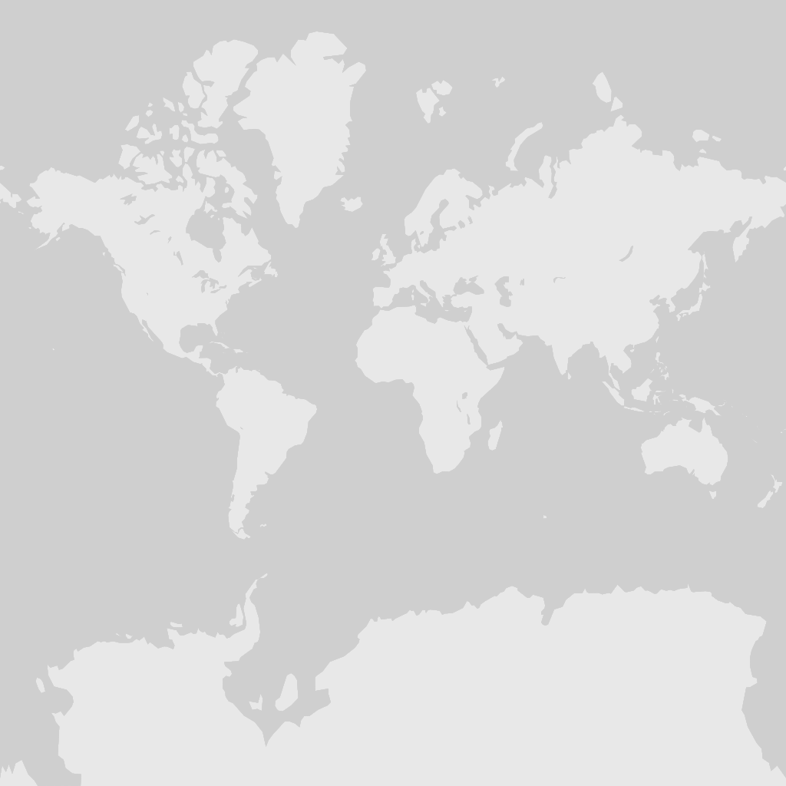

Lechuza común occidental
Tyto alba LC
Tytonidae
Ya publicada: 2026 · 05 · 31
© Анна Голубева / iNaturalist (CC BY-NC-ND)
Alcidae · Charadriiformes
Uria aalge LC
En las gélidas aguas septentrionales del planeta, allí donde las frías corrientes baten las plataformas continentales del Ártico y el Subártico, habita el Arao común (Uria aalge). Esta ave marina, una de las más numerosas del hemisferio norte, destaca por su extraordinaria adaptación al medio acuático. Con sus alas relativamente pequeñas, fruto de un sutil compromiso anatómico entre la locomoción aérea y la natación, el Arao común sacrifica la eficiencia en el aire para obtener una agilidad impresionante bajo la superficie. Al sumergirse, utiliza sus alas a modo de aletas para propulsarse a profundidades que superan los cien metros, persiguiendo con precisión pequeños peces, eufáusidos y cefalópodos en la penumbra marina.
Mantener este estilo de vida tan exigente requiere un elevado gasto energético, lo que obliga a la especie a mantener aleteos muy rápidos para sostenerse en el aire y a alimentarse con frecuencia, a menudo coordinándose en bandadas nutridas. Durante la temporada de reproducción, sus colonias abarrotan las repisas rocosas de los acantilados marinos. En estos vertiginosos cortados de piedra, deposita un único huevo de forma marcadamente piriforme; esta peculiar geometría es una magnífica adaptación que evita que el huevo caiga al vacío, haciendo que gire sobre su propio eje en círculos reducidos si es empujado accidentalmente.
Identificación en campo

 © OpenStreetMap · GBIF
© OpenStreetMap · GBIF
Tyto alba LC
Tytonidae
Ya publicada: 2026 · 05 · 31
Spatula querquedula LC
Anatidae

Larus marinus LC
Laridae

Melanitta nigra LC
Anatidae

Strix aluco LC
Strigidae

Camarhynchus psittacula VU
Thraupidae

Egretta garzetta LC
Ardeidae

Spelaeornis troglodytoides LC
Timaliidae

Botaurus minutus
Ardeidae
Ya publicada: 2026 · 07 · 13
Somateria mollissima NT
Anatidae

Phoenicurus ochruros LC
Muscicapidae
Ya publicada: 2026 · 07 · 22
Ardenna gravis LC
Procellariidae